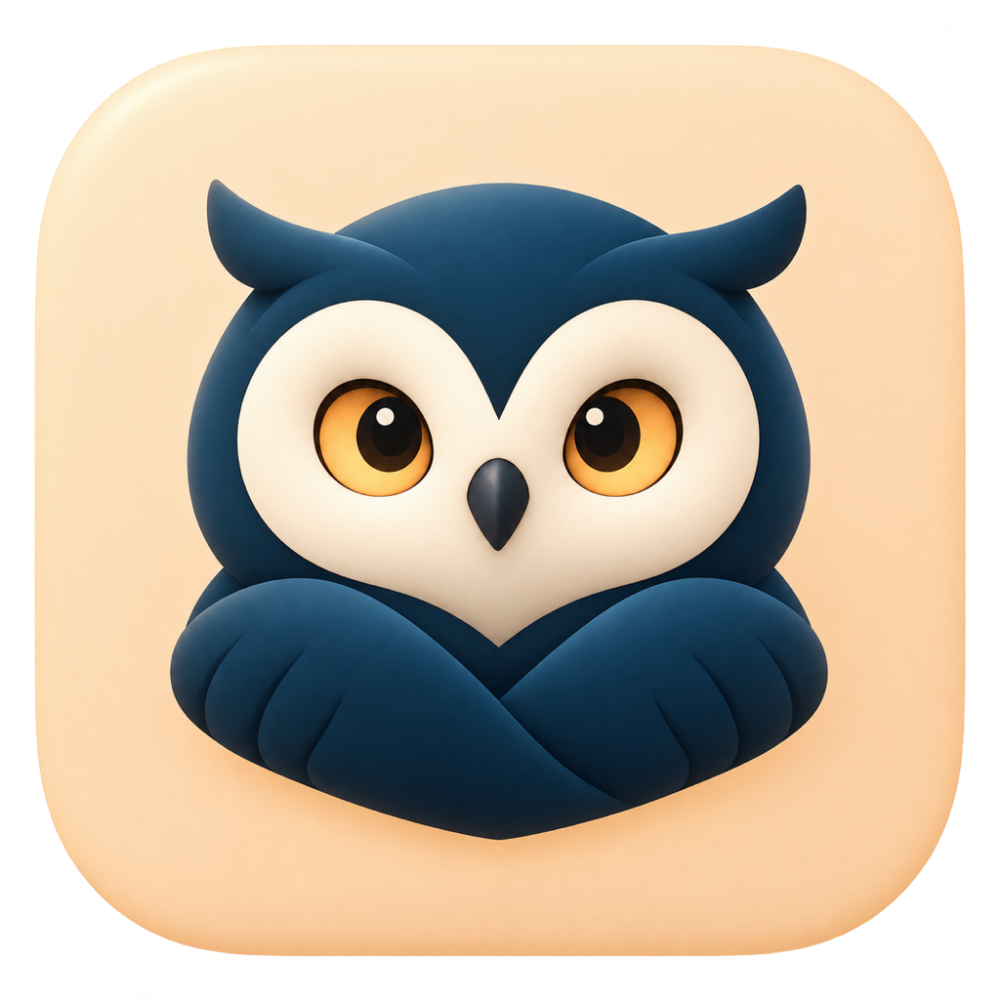
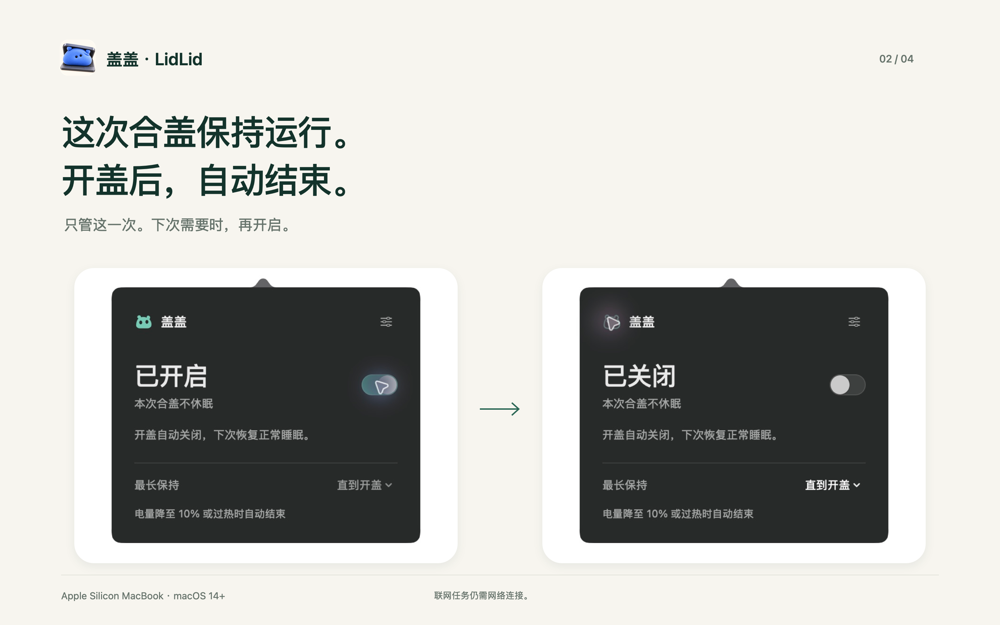
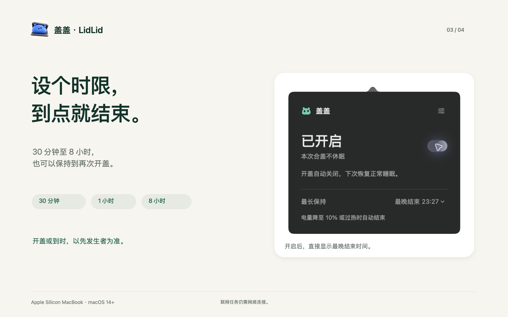
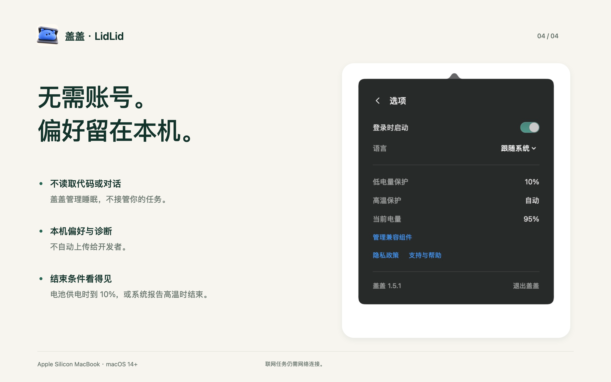
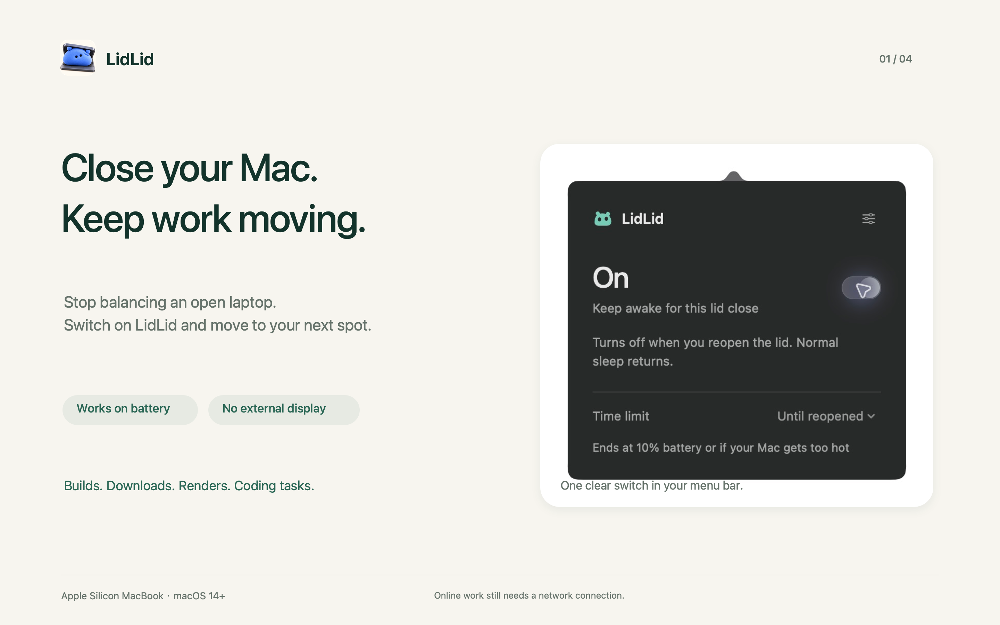
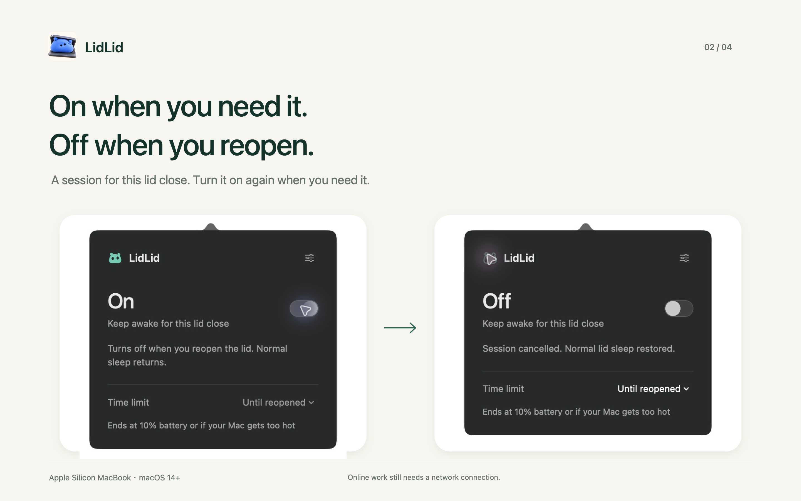
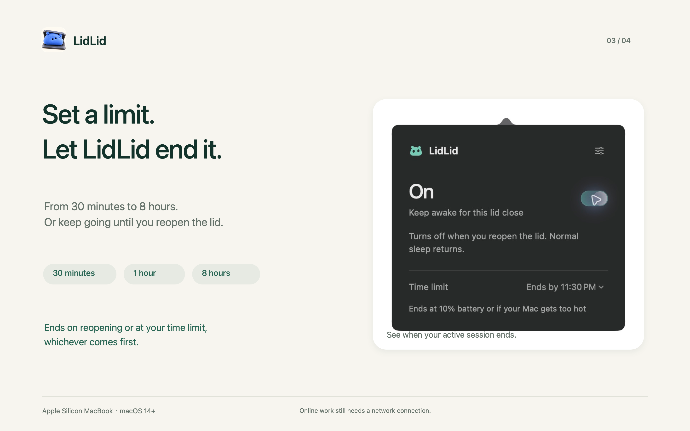
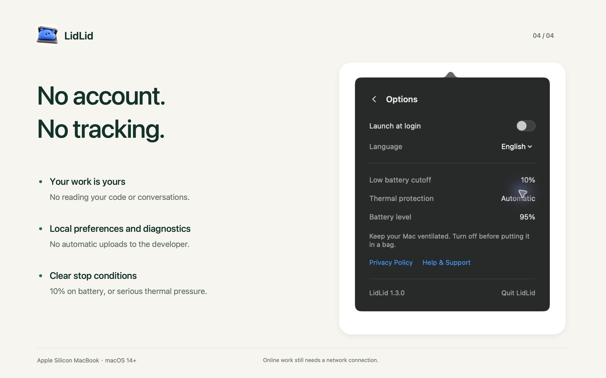

名称 / Name
盖盖：MacBook 合盖不休眠16 characters

1.5.1 · 构建 10 · 中英文文案与真实界面截图
 01 · 2880 × 1800 · PNG ↗
01 · 2880 × 1800 · PNG ↗
02 · 2880 × 1800 · PNG ↗
03 · 2880 × 1800 · PNG ↗
04 · 2880 × 1800 · PNG ↗盖盖：MacBook 合盖不休眠16 characters
合上电脑，从容出发，让任务继续15 characters
任务还没跑完，却已经要出发？打开盖盖，合上 MacBook，让本机任务继续运行。无需插电或外接屏，开盖后本次自动结束。59 characters
保持唤醒,后台运行,编译,下载,渲染,菜单栏,定时,防睡眠,开发,任务87 / 100 bytes
任务还在跑，你已经要走了。 盖盖是一款轻巧的 MacBook 菜单栏工具。需要换个地方时，打开开关，再合上电脑，让正在进行的本机任务继续运行，不必托着一台开盖的笔记本走来走去。 开盖时也能保持运行 独立的「开盖不休眠」开关，防止因闲置而自动休眠，屏幕仍可按系统设置熄灭。合盖或主动睡眠时暂停，开盖唤醒后恢复。此功能无需安装兼容组件，退出盖盖后关闭。 为这一次合盖而开 开启后，本次合盖不休眠；重新打开盖子，会话自动结束。下次需要时，再开启一次。 不用插电，也不用外接屏 适合在不同工位之间移动、换到另一张桌子，或带着还在运行的任务出发。支持电池供电，不需要外接显示器。 任务继续，你也继续 适用于运行中的开发任务、编译、测试、渲染和下载，也适合需要让 Codex 或 Claude Code 继续工作的场景。盖盖控制的是 Mac 的睡眠状态，不会读取代码、接管 AI 工具或替你操作任务。联网任务仍需要网络连接。 给本次运行设个边界 可选 30 分钟、1 小时、2 小时、4 小时或 8 小时，也可以保持到再次开盖。设置了时长后，会话会在开盖或到时两者中较早发生时结束。 轻巧，也有清晰的状态 • 菜单栏小绒团：闭眼为关闭，黑白睁眼为本次合盖，蓝色为开盖不休眠 • 电池供电且电量降至 10% 时自动结束 • 系统报告高温或过热状态时自动结束 • 支持登录时启动、简体中文和英文 • 无需账号，没有广告或追踪；偏好和诊断记录保存在本机 完整合盖功能首次使用需独立安装免费的「盖盖兼容组件」，并在 macOS 中授权后台服务。商店主应用保持沙盒运行，不会索取管理员密码或自动安装组件。组件只在会话期间管理系统睡眠；需要主动睡眠时，请先关闭盖盖。 使用方法 1. 点开菜单栏里的小绒团。 2. 打开开关，确认显示「已开启」。 3. 合上电脑；再次开盖后，本次自动结束。 兼容与使用条件 需要 Apple Silicon（M 系列）MacBook 和 macOS 14 或更新版本，目前不支持 Intel Mac 或台式 Mac。请在未连接外接显示器时启用。 盖盖不会使网络任务离线运行，也不会自动保存或管理其他应用的任务。920 characters
开盖不休眠启用时，菜单栏精灵显示品牌蓝色；本次合盖模式保留系统黑白图标。界面说明更简洁。44 characters
https://lidlid.vercel.app/
https://lidlid.vercel.app/support/
https://lidlid.vercel.app/privacy/

01 · 2880 × 1800 · PNG ↗
02 · 2880 × 1800 · PNG ↗
03 · 2880 × 1800 · PNG ↗
04 · 2880 × 1800 · PNG ↗LidLid: Closed-Lid Keep Awake29 characters
Close the lid. Carry on.24 characters
Work still running when you need to move? Keep your MacBook awake with the lid closed, on battery and without an external display. Reopen it to end the session.160 characters
clamshell,sleep,laptop,background,timer,build,download,render,menubar,awake,screen82 / 100 bytes
Your work is still running. You need to go. LidLid is a small menu bar app for MacBooks. Switch it on before closing your laptop to keep local work running as you move to another spot. No more balancing an open laptop while you walk. Keep awake while open, too An independent switch prevents idle system sleep while the lid is open. Your display can still sleep normally. It pauses on lid close or manual sleep, resumes after reopening and wake, and turns off when you quit LidLid. This mode does not require the compatibility component. One session for this lid close Turn it on when you need it. Reopening the lid ends the session automatically. Turn it on again for the next time you need it. No charger. No external display. Keep working on battery power as you move between desks or find a new place to sit. An external monitor is not required. Keep the work moving Useful for coding tasks, builds, tests, renders and downloads, including work running in Codex or Claude Code. LidLid manages your Mac's sleep state; it does not read your code, control AI tools or operate your tasks. Online work still needs a network connection. Set a boundary for this session Choose 30 minutes, 1, 2, 4 or 8 hours, or keep the session until you reopen the lid. With a time limit, the session ends when you reopen the lid or reach the limit, whichever comes first. Small controls. Clear state. • A menu bar guardian: closed eyes when off, monochrome for this lid close, blue for open-lid keep-awake • Ends at 10% battery while running on battery power • Ends when macOS reports serious or critical thermal pressure • Optional launch at login • English and Simplified Chinese • No account, advertising or tracking; preferences and diagnostic records stay on your Mac Full closed-lid operation requires the separately installed, free LidLid Compatibility component and macOS background-service approval. The Store app stays sandboxed; it never asks for an administrator password or installs the component automatically. The component manages system sleep only during a session. Turn LidLid off before choosing Sleep. Getting started 1. Open the LidLid icon in your menu bar. 2. Switch on and wait for On. 3. Close the lid. Reopening ends the session. Compatibility and use Requires an Apple Silicon MacBook and macOS 14 or later. Intel Macs and desktop Macs are not supported. Disconnect external displays before enabling a session. LidLid does not make online tasks work offline, or save and manage work in other apps.2518 characters
Open-lid keep-awake now uses a blue guardian in the menu bar. One-shot closed-lid sessions keep the native monochrome icon. Simplified interface copy.150 characters
https://lidlid.vercel.app/en/
https://lidlid.vercel.app/en/support/
https://lidlid.vercel.app/en/privacy/